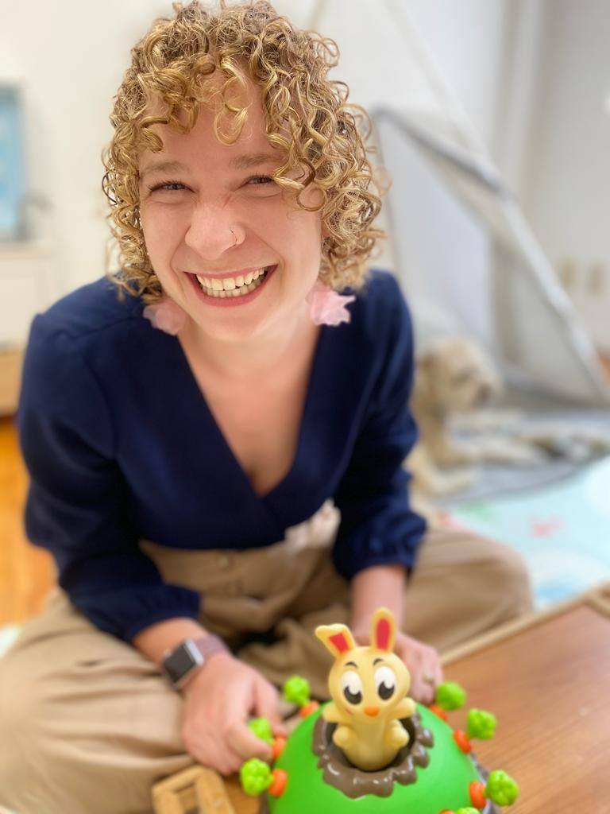

Home, clinic, virtual and school-based services in Mexico, the U.S.,
and across the world for the English speaking population.
Celia Young, Owner, MA, CCC-SLP, SLDI

Celia is a passionate and dedicated Speech-Language Pathologist, driven by a unique combination of personal experience and a profound commitment to helping those with dyslexia. Her journey in this field was shaped by years of teaching preschool, combined with her own childhood struggles with dyslexia, which led her to understand the transformative power of intervention and support. At the age of 7, Celia was diagnosed with dyslexia, an experience that left her with a deep sense of frustration and inadequacy. Fortunately, with unwavering support from her parents and dedicated educators, she received life-changing Orton-Gillingham intervention. This intervention allowed Celia to thrive in an academic setting, eventually obtaining a Master's Degree in Speech-Language Pathology from the University of Colorado, Boulder, which she reflects on as “getting a Masters in the hardest thing for my brain—language!”
Armed with her degree and a unique insight into the world of dyslexia, she began her career as a Pediatric Speech-Language Pathologist in Denver. However, she always felt an unshakeable connection to the dyslexic population and an insatiable curiosity about the intersection of traditional speech therapy and the latest research on the Science of Reading. Driven by this passion and determination, she embarked on a journey to gain specialized training in Orton-Gillingham intervention, which expanded her expertise in working with individuals with dyslexia and related learning differences. This additional knowledge has equipped her to provide the highest level of care and support to those in need. Celia is recognized by both the International Dyslexia Association and The Center for Effective Reading Instruction as a Structured Literacy Dyslexia Interventionist.
Currently, Celia resides in Mexico City with her partner. It is her mission to support and connect with families on all aspects of dyslexia, from understanding the academic challenges to addressing emotional and institutional issues. Her goal is to help individuals not just survive but thrive, and to empower them to understand their unique learning differences and excel in all environments. She believes in using fun, engaging, and meaningful activities as a means of guiding children on their path to success. Her approach to therapy is grounded in personal experience, professional expertise, and unwavering dedication to those facing challenges like herself.
Contact us
celiayoungminds@gmail.com
Call: +1 (917) 843-7575